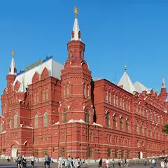

У метро · ЦАО
Куда сходить у метро «Площадь Революции»
Для 8 мест из нашего каталога ближайшая станция — «Площадь Революции» (ЦАО): 2 ресторана или кафе, 2 музея, 1 кофейня и 1 культурное место. Например, «Красная площадь», «Исторический музей» и «Собор Василия Блаженного». Недорогих, примерно до 1 500 ₽ на человека, — 4. 6 готовых планов проходят через эту станцию — например, Воскресный бранч в «Метрополе», с маршрутом пешком между точками.
- 8 мест
- 6 планов
Места у метро «Площадь Революции» 8
Красная площадь
Главная площадь страны: Кремль, Василий Блаженный, ГУМ и Исторический музей в одном кадре.
Подробнее и маршрут: Красная площадьПозвать сюда: Красная площадь
Фото: mos.ru, CC BY 4.0 · Wikimedia Commons

Красная площадь, 1
Краснокирпичный музей на Красной площади — история страны от древности до XX века.
Подробнее и маршрут: Исторический музейПозвать сюда: Исторический музей
Фото: Alvesgaspar, CC BY-SA 3.0 · Wikimedia Commons
Красная площадь, 7
Разноцветные купола на Красной площади; внутри — музей и узкие галереи.
Подробнее и маршрут: Собор Василия БлаженногоПозвать сюда: Собор Василия Блаженного
Фото: W. Bulach, CC BY-SA 4.0 · Wikimedia Commons
Красная пл., 3 (ГУМ)
Новое
Кафе в ГУМе с окнами на Красную площадь и Кремль. Завтраки с 9 утра, вечером живая музыка — красивая точка, чтобы начать или закончить прогулку по центру.
Никольская ул., 10
Новое
Огромный гастромаркет в двух шагах от Красной площади: десятки кухонь мира в одном зале. Шумно и весело, по пятницам и субботам открыт до 5 утра.
Красная пл., 3 (ГУМ, 3-я линия, 3-й этаж)
Новое
Маленький кинозал в ГУМе с лепниной, хрустальными люстрами и бархатными шторами. Премьеры, кино на языке оригинала и трансляции опер и спектаклей.
Красная площадь, 3
Исторический универмаг на Красной площади: фонтан, «Гастроном №1» и мороженое в стаканчике.
Красная пл., 3
Кафе бренда Limé на втором этаже ГУМа: муссовые пирожные и кофе. 10–22.


Готовые планы 6
- Красная площадь · Площадь · м. Площадь Революции
- 9 минут пешкомМетрополь · Ресторан в историческом отеле
Прогулка по Красной площади, а с 13 до 17 по воскресеньям — знаменитый бранч-буфет «Метрополя» под витражным куполом с фонтаном.
Открыть план: Воскресный бранч в «Метрополе»Позвать сюда: Воскресный бранч в «Метрополе»
Фото: mos.ru, CC BY 4.0 · Wikimedia Commons
- Красная площадь · Площадь · м. Площадь Революции
- 3 минуты пешкомBosco Cafe · Кафе с видом на Кремль
Красная площадь утром, пока нет толп и очередей, а с 9 часов — завтрак в Bosco Cafe в ГУМе, где окна смотрят прямо на Кремль.
Открыть план: Красная площадь до толп и завтракПозвать сюда: Красная площадь до толп и завтрак
Фото: mos.ru, CC BY 4.0 · Wikimedia Commons
- Красная площадь · Площадь · м. Площадь Революции
- 9 минут пешкомВосход · Ресторан с видом на Кремль
Вечерняя Красная площадь и ужин с видом на Кремль в «Восходе» в «Зарядье».
Открыть план: Красная площадь и «Восход»Позвать сюда: Красная площадь и «Восход»
Фото: mos.ru, CC BY 4.0 · Wikimedia Commons
- Красная площадь · Площадь · м. Площадь Революции
- 2 минуты пешкомГУМ · Универмаг
Красная площадь, ГУМ с фонтаном и мороженое в стаканчике.
Открыть план: Красная площадь и ГУМПозвать сюда: Красная площадь и ГУМ
Фото: mos.ru, CC BY 4.0 · Wikimedia Commons
- Красная площадь · Площадь · м. Площадь Революции
- 2 минуты пешкомLimé Cafe · Кафе в ГУМе
Круг по Красной площади мимо Кремля и Василия Блаженного, а потом кофе и муссовые пирожные в кафе Limé на втором этаже ГУМа.
Открыть план: Красная площадь и кафе Limé в ГУМеПозвать сюда: Красная площадь и кафе Limé в ГУМе
Фото: mos.ru, CC BY 4.0 · Wikimedia Commons
- Кинозал ГУМ · Кинотеатр · м. Площадь Революции
- 7 минут пешкомВокруг Света · Гастромаркет
Фильм в маленьком зале ГУМа с лепниной и бархатными шторами, а потом гастромаркет «Вокруг Света» на Никольской: десятки кухонь, а в пятницу и субботу — до 5 утра.
Открыть план: Кино в ГУМе и ночной гастромаркетПозвать сюда: Кино в ГУМе и ночной гастромаркет
Как позвать
- Выбери план, место или событие — в карточке адрес, цены и маршрут в Яндекс Картах.
- Нажми «Позвать сюда» — соберётся приглашение-игра для свидания или голосование для компании.
- Отправь ссылку в любой мессенджер: тебе ответят, а компания отметит, куда и когда может. Бесплатно и без регистрации.